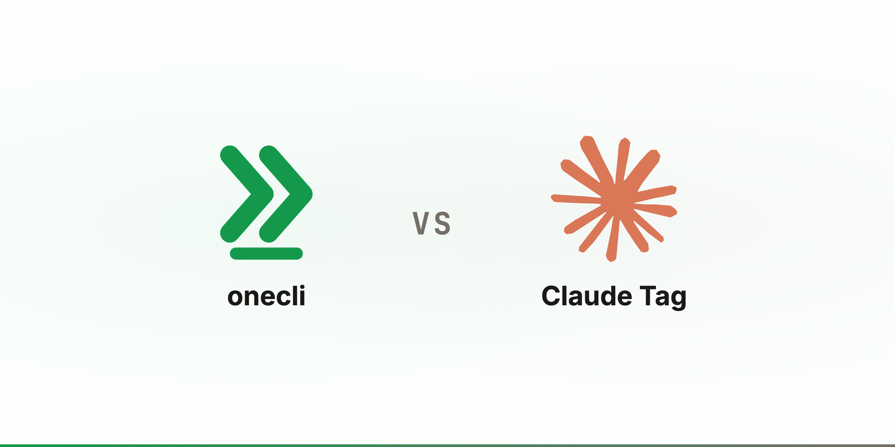
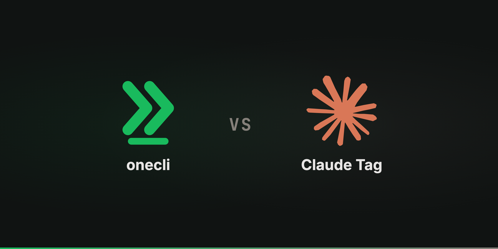

Compare
OneCLI vs Claude Tag
Anthropic built the same credential architecture we did. The difference is whose permissions the agent carries: a Slack channel's, or an employee's.
UpdatedThe short version
Start with the part least convenient for us. Anthropic's agent identity post says the credential is "stored independently and mapped to that channel's identity, then injected at the network boundary at request time," and unlisted hosts are "blocked outright." That is the architecture this entire site argues for. Against Claude Tag it is not a differentiator, it is agreement: when the frontier lab shipped a team agent, they put the credentials outside the box too.


The real difference: whose permissions?
Claude Tag's unit of access is the channel. An admin provisions service accounts, attaches them to a channel, and everyone in that channel shares them. Anthropic is direct about the consequence, in their words: "a channel member without direct access to the repo can ask Claude to read that repo, if the channel's profile grants Claude that permission."
OneCLI's unit of access is the employee. Each person's agent is scoped to what that person already has, so support cannot reach payroll by asking nicely. Nothing widens when someone joins a channel.
Neither answer is careless. Theirs solves a real problem: with four people steering one agent, whose permissions should apply? "The channel's" is defensible and it makes multiplayer work. It also means a public channel with a bundle attached grants that access to anyone who joins. Anthropic lists the fix as future work, an "identity-aware overlay." Until it ships, the compartment is the boundary.
Approvals: shipping versus planned
Claude Tag has spend limits, per-channel scoping, host allowlists, and a full audit trail. What it does not have yet is a hold on an individual action. Anthropic names it under what's next: "just-in-time credential grants, so that a user can approve a single sensitive action in the moment." That describes what OneCLI approvals do today. The agent works up to the sensitive step, the gateway holds that request, and a named person releases it. The refund waits; the check that led to it does not. Both products can say no to a whole capability. Only one can say "not this one, not yet."
How they differ
Where they agree
onecli
None. Placeholders inside, real keys injected at the wire, model key includedClaude Tag
None. Credentials live in a separate store and are injected by Agent Proxy at the network boundaryonecli
Default-deny at the container network: the gateway and its runner are the only reachable destinationsClaude Tag
Default-deny: unlisted hosts are blocked outright rather than merely unauthenticatedWhose access the agent carries
onecli
The employee. Each agent is scoped to what its person can already reachClaude Tag
The Slack channel. Service accounts are attached per channel and shared by everyone in itonecli
No. An agent is a scoped extension of one person and cannot outrank themClaude Tag
Yes, by design: "a channel member without direct access to the repo can ask Claude to read that repo"onecli
Ships today. The gateway holds one request for a named human while the rest of the work proceedsClaude Tag
On the roadmap: "just-in-time credential grants" are listed under what is nextonecli
Per-employee memory in a sealed personal layer; the shared layer is what the company publishes deliberatelyClaude Tag
Public-channel memory is workspace-wide, and Claude can keyword-search public channels it was never added toWhere it runs and what it costs
onecli
Web, Slack, and the terminal, with one identity and one audit trail across all threeClaude Tag
Slack today, with Microsoft Teams on a waitlistonecli
Model-agnostic across 25+ providers, or bring your own keys, with the key still never entering the sandboxClaude Tag
Claude only, on Anthropic's first-party serviceonecli
Cloud, or run the whole system on your own infrastructure. Apache-2.0 outside the ee/ directories, so the code is yours to read, audit, and forkClaude Tag
Anthropic-hosted only. Not available for third-party deployments, and unavailable to organizations with Zero Data Retention enabledonecli
Per user and per agent, with models included or BYO keysClaude Tag
No per-seat charge. Channel work draws from a usage balance with an admin-set spend cap; DMs bill to the sender's own seatRunning both
These are less mutually exclusive than the table suggests. Anthropic runs their own product team on Claude Tag and reports 65% of that team's code coming out of it. Split by whether the work belongs to a room or to a person. Collaborative triage in a channel, where everyone should see it and any of them could pick it up, is Claude Tag's shape. Work scoped to one employee's accounts, or touching a step somebody has to approve, is ours. A OneCLI agent can also call the Anthropic API through the gateway like any other service, so using Claude as the model does not require adopting the access model.
When to use which
Use Claude Tag when
- ·Your team's work genuinely happens in Slack channels and should stay visible to the room
- ·You are already a Claude Enterprise or Team customer and want the deepest Claude integration available
- ·Multiplayer is the point: several people steering one agent on one thread
- ·Channel-scoped service accounts match how you already think about access
- ·You want Anthropic to host and operate the whole thing
Use OneCLI when
- ·An agent must never reach something its human could not reach directly
- ·You need to hold one sensitive action for approval without switching off the capability behind it
- ·People need their agent from a terminal or the web, not only from Slack
- ·You want to choose the model, or change it later, without changing platforms
- ·Zero Data Retention, self-hosting, or reading the source is a requirement rather than a preference
Common questions
Anthropic built the same credential model. Doesn't that undercut your pitch?
Is the channel access model actually a problem?
Can I use Claude models with OneCLI?
Does OneCLI work in Slack too?
What does Claude Tag do better?
Can we run this entirely on our own infrastructure?
The longer version of the enforcement argument is in why an MCP gateway cannot see most of what your agent does, and the shape of the product is on the product page.
Also compared
Try it
Be greedy about AI. Never about access.
$ curl -fsSL onecli.sh/install | sh